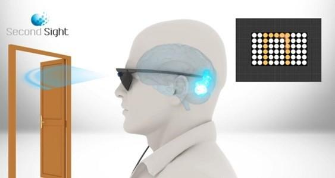
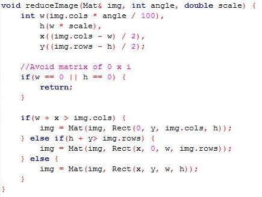

Argus 2, Second Sight
Présentation
Le système de prothèse Argus 2, développée par la société américaine Second Sight, est un implant épirétinien (placé sur la rétine par opposition aux implants subrétinien).
Cette prothèse est la première à avoir reçu l'homologation de la FDA (États-Unis) et de l'Espace Économique Européen (marquage CE). En effet, ce dispositif permet de restaurer une vision fonctionnelle chez les personnes souffrant de certaines maladies de dégénérescence de la rétine, comme la rétinite pigmentaire par exemple. Ce système est même remboursable aux États-Unis par Medicare (assurance-santé des personnes de plus de 65 ans) et aussi en France, grâce au "forfait innovation". Cette prothèse est disponible en France dans 3 centres médicaux : Paris, Strasbourg et Bordeaux.
Cet implant est l'implant rétinien le plus évolué actuellement. En effet, il a subi de nombreux tests cliniques, ce qui lui permet d'avoir une expérience importante vis-à-vis du développement de prothèse rétinienne.
Les composants
- Equipement interne, situé autour de l'oeil :
- Une antenne réceptrice, située autour de l'oeil.
- Un boîtier électronique, située autour de l'oeil.
- Un faisceau de 60 électrodes, implantée sur la macula par voie chirurgicale.
- Equipement externe :
- Une paire de lunettes sur laquelle sont fixées une antenne émétrice et une caméra miniature.
- Une unité de traitement vidéo (VPU)
La paire de lunettes n'a pas qu'un but esthétique, elle sert de support à la caméra digitale et à l'antenne. En effet, l'antenne a besoin d'être située près de l'antenne réceptrice, afin d'éviter au maximum les interférences. De plus, cela permet de placer la caméra au niveau des yeux afin d'obtenir le même champ de vision que des yeux sains.
Etant donné que le VPU est un dispositif externe, il peut facilement disposer des dernières versions du logiciel qui peuvent comprendre des corrections de bugs ou de nouvelles innovations. De plus, celui-ci est paramétrable par l'utilisateur. En effet, le patient peut configurer l'amplificateur de contraste et de contour, afin de configurer ce qu'il perçoit.
Le fonctionnement
Les cônes et les bâtonnets se chargent de mesurer l'intensité lumineuse ou d'une couleur, puis de l'interpréter, avant de la transmettre aux cellules bipolaires sous forme de message nerveux (donc électrique). Cependant ces 3 rôles sont répartis chez les différents composants du système de l'Argus 2. En effet, la caméra se charge de récupérer des informations de l'environnement. Puis le vidéo processeur s'occupe d'interpréter les informations récupérées par la caméra. Enfin les électrodes se chargent de transmettre le message nerveux sous forme de signal électrique.
La caméra digitale permet d'obtenir des images sous forme de matrices ou tableaux de pixels à l'aide de l'unité de traitement vidéo. Cette image est alors modifiée par des traitements informatiques (amélioration des contrastes, lissage, mise en niveau de gris) effectués par le processeur vidéo. Puis cette image est réduite à une image de 10 x 6 (nombre d'électrodes). Elle est ensuite transmise par ondes radios au boîtier présent dans l'implant. Celui-ci se charge de transformer cet ensemble de pixels en différentes intensités électriques qui seront alors transmises aux électrodes correspondants. Les électrodes stimulent ensuite électriquement les cellules ganglionnaires qui s'occupent de transmettre le message au cerveau par le biais du nerf optique en bypassant les cellules bipolaires . Le patient perçoit alors des phosphènes (sensation de voir une lumière). C'est cet ensemble de phosphènes qui lui permet de distinguer des formes, etc. Cependant il faut qu'il apprendre à interpréter ces phosphènes.
Ceci est une hypothèse de comment le système Argus 2 fonctionne. Celui-ci n'étant pas open-source, il est difficile de savoir ce qu'il se passe précisément entre le moment où la caméra filme des images et le moment où les électrodes transmettent de l'électricité aux neurones.
Expérience
Dans le système Argus 2 et autres systèmes similaires, les informations récupérées par la caméra ne sont pas les mêmes que celles transmises par le biais des électrodes. En effet, celles-ci subissent différents traitements lors du passage dans le vidéo processeur.
Quels sont les différents traitements effectués par le VPU ?
J'ai décidé de réaliser un programme en C++ reproduisant les différentes étapes afin de voir ce que le patient devrait "percevoir". Pour ce faire, j'ai utilisé la bibliothèque OpenCV. Ce programme de simulation permet d'effectuer ces différents traitements sur le flux d'une webcam et de l'afficher. De plus, on peut modifier le nombre d'électrodes en largeur (10 par défaut) et en hauteur (6 par défaut), donc par extension la définition de l'image que percevra le patient. On peut également réaliser ces traitements pour un fichier image présent sur le disque dur.
Code source disponible sur Github, ici.
Exécutable disponible, ici (broken link).
1 - Récupérer une image
Une caméra permet de récupérer un flux d'images en couleurs. Une image est elle-même composée de plusieurs milliers de pixels. Un pixel est composé, lui, de 3 valeurs : une intensité de rouge, une de bleu et une de vert.
Une caméra permet donc de récupérer un tableau de pixels ou 3 tableaux contenant chacun les différentes intensités propres à une couleur. Les tableaux se traduisent mathématiquement par des matrices.
Commençons par récupérer une image en couleur via la webcam.
Code correspondant :
2 - Transposition en noir et blanc
Tout d'abord, il va falloir réduire le nombre d'informations transmises. En effet, une électrode stimule plusieurs neurones mais il est impossible de savoir lesquels précisément. Il sera donc difficile de transmettre des informations concernant la quantité de bleu, de rouge et de vert. On peut donc déjà transposer notre image couleur en une image noir et blanc (nuances de gris).
Pour se faire, il suffit simplement de faire la moyenne de la quantité de bleu, noir et rouge pour chaque pixel.
Code correspondant :
3 - Réduire l'image
Avant de pixeliser l'image, il faut réduire l'image. Sinon l'image finale sera "flou" et il sera alors quasiment impossible d'apercevoir des détails.
Afin de découper une matrice, il suffit de garder seulement les valeurs de la zone désirée. Il suffit ensuite de pixeliser l'image réduite.
Code correspondant :
Ici, "angle" correspond au pourcentage de la largeur à garder.
Tandis que "scale" correspond au ratio de l'image pour que l'image finale ne soit pas déformée.

4 - Pixeliser l'image
Le système Argus 2 dispose d'un faisceau de 60 électrodes qui peut donc être associé à une matrice de 10 par 6 (10*6 = 60).
Il faut donc réduire notre image en noir et blanc à une image de 60 pixels seulement. Pour ce faire, nous allons "couper" notre matrice en 60 zones égales et faire la moyenne des valeurs présentes dans ces zones. On pixelise donc l'image.
Code correspondant :
5 - Retourner l'image
Cependant une rétine saine perçoit une image renversée, comme quand on regarde dans une cuillère. Il suffit donc de retourner notre matrice afin que le patient ne perçoive pas le monde à l'envers. Le pixel en haut à gauche vient à la place de celui en bas à droite et vice versa.
Code correspondant :
6 - Traduire l'image en fréquences
Ensuite la dernière étape consiste à transformer notre matrice qui représente une image en noir et blanc en fréquences.
Un pixel est en général composé de 3 entiers (un pour chaque couleur) codés sur 8 bits. Ces entiers sont donc compris entre 0 et 255 (2^8 possibilités = 256). Dans le cas d'une image en échelle de gris, ces 3 entiers sont égaux, il suffit donc d'en choisir un.
Notre matrice de 10 * 6 est composée de 60 nombres entiers compris entre 0 et 255. Il suffit donc d'utiliser un tableau de proportionnalité pour passer de ce nombre entier à une fréquence.
Dans la représentation des images en noir et blanc, une valeur de 0 correspond au noir et 255 à du blanc, par extension 0 correspond à fréquence faible et 255 à une fréquence élévée.
7 - Répétition de l'algorithme et temps de traitements
Toutes ces étapes sont répétées plusieurs fois par seconde, afin que le patient ait une vue fluide. On peut, ici, faire un lien avec les jeux vidéos ou les vidéos en général. En effet, la fluidité d'un jeu, d'une vidéo ou de la vue d'un patient disposant d'un système Argus 2 dépend du nombre d'images par seconde. Afin que les mouvements paraissent fluide, il faut au moins une vingtaine d'images par seconde. Cependant celui-ci dépend du temps de traitements de chaque image.
Pour en revenir au système Argus 2, le temps de traitements de chaque image est le temps que l'ordinateur met pour répéter les étapes 1 à 6. Or ce temps dépend directement du nombre d'électrodes de l'implant.
Voici l'évolution du temps de traitement en fonction du nombre d'électrodes dans mon programme de simulation.
Conclusion sur la réalisation du logiciel de simulation
La réalisation de ce programme ne s'est pas faite sans difficulté. Tout d'abord, il a fallu compiler la bibliothèque OpenCV afin de pouvoir l'utiliser. J'ai donc découvert l'utilisation de CMake et après plusieurs tentatives, je pouvais enfin commencer à programmer. Une autre difficulté que j'ai rencontré fut la manipulation des matrices, plusieurs possibilités afin d'accéder aux éléments des matrices. Ensuite une fois tous les traitements effectués, l'image finale manquait de couleur, impossible d'obtenir du noir par exemple. C'était seulement les canaux des matrices qui variaient d'une matrice à l'autre et qui donc modifiaient les couleurs de celles-ci car elle passait d'une image en noir et blanc à une image en couleur (RGB).
Plusieurs images pixelisées provenant d'une même image avec des nombres d'électrodes différents
Conclusion de l'expérience
On peut constater qu'il est difficile de reconnaître des détails, comme un visage par exemple, avec une image de seulement 60 pixels. Cependant lorsqu'on augmente la définition de l'image, il devient tout de suite plus facile d'apercevoir ces détails. Mais lorsqu'on augmente la définition de l'image finale, le temps de traitement des images augmente énormément, ce qui peut entraîner des retards entre ce que le patient verra et la réalité. Afin de toujours traiter les images en temps réel, il y a différentes solutions : optimiser les traitements ou disposer d'un vidéo processeur plus puissant. Cependant les algorithmes ne peuvent pas être optimisés indéfiniment et une unité de traitement plus puissante consommerait plus et nécessiterait donc une batterie plus grande et donc plus lourde.
Inconvénients / Avantages
Afin que le cerveau perçoive les informations transmises par les électrodes, il faut que les cellules nerveuses de la rétine et le nerf optique fonctionnent toujours. Un aveugle de naissance ou une personne souffrant de la glaucome, par exemple, n'ayant donc pas de nerf optique fonctionnel ne peut donc pas disposer du système Argus 2. De plus, la qualité de la vision perçut grâce à l'implant dépend énormément de l'état des neurones de la rétine et du nerf optique.
Ensuite la "résolution" proposée par le système Argus 2 n'est que l'équivalent de 60 pixels. Ce n'est pas assez pour lire. D'après des études, il faudrait une résolution d'au moins 600 pixels pour réussir à lire. Mais une alternative à cette prothèse pourrait être le système français IRIS qui dispose de 150 électrodes, donc d'une résolution de 150 pixels. Ce système a un fonctionnement similaire à celui de Second Sight et est développée par la société Pixium Vision. De plus, ce système est explantable, contrairement à l'équivalent américain. Il peut donc être retiré sans causer de dégât à la rétine.
D'autres inconvénients du système Argus 2 sont les batteries qui durent moins de 7h ou encore le poids de l'équipement externe. De plus quand le dispositif est branché, le cerveau du patient ne dispose pas de repos car celui-ci "voit" tout le temps. En effet, le patient ne peut pas cligner des yeux.
Enfin ce système coûte très cher, plus 70 000€. Bien qu'il dispose maintenant du forfait innovation, ce qui permet de diminuer énormément son prix puisqu'il est pris en charge par différents organismes. Il est par exemple remboursé en France et aux États-Unis par les services d'assurance-santé.
Heureusement le système Argus 2 n'a pas que des inconvénients ! Tout d'abord, il permet à des personnes devenus aveugles suite à une dégénérescence des photorécepteurs de la rétine de retrouver la vue, ce qui est un avantage incontestable. Certes cette vue n'est pas celle qu'ils possédaient avant mais elle leur permet de se déplacer seul plus facilement. Les patients opérés disposent ainsi d'un champ de vision d'environ 20°, l'équivalent d'une règle de 30cm tendue à bout de bras. Certains arrivent même à lire des mots en gros caractères blancs sur fond noir. Le système Argus 2 est actuellement l'implant épirétinien le plus évolué disponible sur le marché.
Bien sûr, cet implant n'égale pas encore l’œil humain, loin de là. Mais il permet à des personnes aveugles suite à certaines maladies de retrouver une certaine vision et donc une certaine autonomie. Des pistes de recherche sont l'amélioration de la capacité de traitement du vidéo processeur et de la durée des batteries. Une autre piste de recherche indispensable est le nombre d'électrodes afin d'améliorer la vision du patient.
Applications futures possibles
Lorsque le système de la société Second Sight se sera amélioré. En plus de pouvoir disposer d'une acuité visuelle supérieure à la normale peut-être que les porteurs de ce système pourront disposer d'applications supplémentaires. En effet puisque les informations issues de la caméra sont traitées par le VPU avant d'être transmises aux électrodes. Le VPU pourrait afficher des informations supplémentaires sur l'environnement, un peu comme le principe des Google Glass. En effet, imaginer des premiers secours capablent de repérer plus rapidement les survivants suite à une catastrophe en repérant les personnes dont le cœur bat encore, ou des chirurgiens ayant des indications sur leur opération directement dans leur champ de vision, etc. Les applications possibles sont multiples ! Une autre possibilité serait de pouvoir visualiser directement le cyberespace en proposant une autre interface qu'un écran. Mais ceci pose une question d'éthique : qui en aura accès ? a-t-on le droit de modifier l'Homme comme ceci ? Autant de questions auxquelles les transhumanistes tentent de répondre et d'ouvrir le débat.